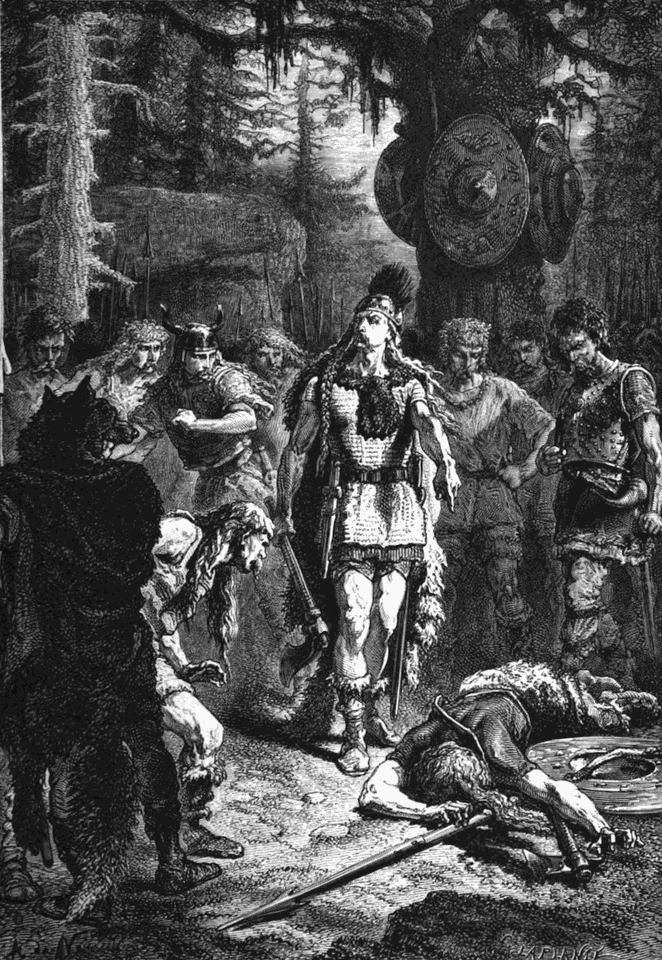

蠻族崛起的政治重塑：法蘭克人的民族生成、羅馬遺產與克洛維一世的霸權奠基

法蘭克人的起源、分支與漸進式民族生成
法蘭克人（Franks）並非單一血緣的民族，而是在公元三世紀羅馬帝國面臨三世紀危機時，興起於萊茵河下游前線的日耳曼部落聯盟[1]。羅馬文獻在公元 250 年代首次提及法蘭克人（如《奧古斯都歷史》記錄擊敗法蘭克襲擊者的軍歌），將其描述為活動於萊茵河下游、頻繁襲擾羅馬高盧邊境的掠奪者[1]。其族名在語言學上源自原始日耳曼語的 *frankon（意為「標槍」或「投矛」，後引申為「兇猛」、「勇猛」），並在中世紀拉丁語與羅曼語中演變為「自由人」之意（因法蘭克人在高盧境內享有完全自由的公民與法權地位）[2]。另一種邊境社會學觀點指出，Fraecne 可能最初是定居於羅馬境內的帝國屯墾兵（laeti）對萊茵河外側自由日耳曼掠奪者的稱呼，隨後被這群日耳曼人採納為彰顯主體性的政治認同[3]。
在地理分佈上，早期法蘭克人居住在萊茵河下游至威悉河之間的沼澤低地與森林地帶（今荷蘭與德國西北部）[1]。他們並非歐亞草原式的游牧民族，而是實行定居農業、依託村落氏族運作的農耕與軍事社群[1]。在語言學上，他們屬於日耳曼語族的萊茵-威悉群（Rhine-Weser group）[4]。隨著時間推移，這個部落聯盟逐步凝聚並分化為兩個最核心的地理與政治亞群：薩利安法蘭克人（Salian Franks）與里普阿里安法蘭克人（Ripuarian Franks，又稱萊茵法蘭克人）[5]。
薩利安法蘭克人（Salii）主要定居於北海沿岸與萊茵河三角洲低地，其名稱可能源於「鹽海」（Salt sea）或薩拉河（古名 Isala，今荷蘭艾瑟爾河 IJssel）[5]。在第四世紀中葉，薩利安人向西南跨越邊境，取代了原本定居在萊茵河口的巴達維人（Batavi）與墨納皮人（Menapii）[6]。公元 358 年，羅馬副帝朱利安（Julian the Apostate）與薩利安人締結盟約，正式允許他們以羅馬帝國「同盟者」（Foederati）的身分定居於托克桑德里亞（Toxandria，今荷蘭南部與比利時北部一帶）[5]。在語言上，薩利安人使用古低地法蘭克語（Old Low Franconian / Old Dutch），成為現代荷蘭語與佛拉芒語的直系源流[4]。
里普阿里安法蘭克人（Ripuarii，名稱源自拉丁語 ripa，意為「河岸」）則是由布魯克特里（Bructeri）、滕克特里（Tencteri）、蘇康布里（Sugambri）、卡馬維（Chamavi）與卡圖阿里（Chattuarii）等萊茵河中游部落逐漸融合而成[5]。他們固守在萊茵河中游兩岸，以科隆（Cologne）為政治與軍事中心，勢力向西延伸至阿登森林與碳林（Silva Carbonaria）[7]。在語言上，里普阿里安人使用高地日耳曼語支的中西部日耳曼方言（Rhenish Franconian），演變為現代中西部德語方言的核心基礎[4]。
早期的傳統史學敘事常將法蘭克人的擴張描繪為跨越萊茵河、以毀滅性暴力席捲羅馬高盧的入侵浪潮，但現代考古學與古典晚期歷史學研究（如弗蘭斯·泰烏斯 Frans Theuws 與蓋伊·哈索爾 Guy Halsall 的研究）對此提出了重大修正[8]。事實上，高盧北部的蠻族化與羅馬權威的交接是一個長達兩個世紀的漸進式移民與軍事制度轉型過程[8]。隨著羅馬帝國晚期官僚體系與邊防軍團的戰略後撤，北高盧鄉村與要塞出現了顯著的管治真空，法蘭克軍事移民隨之填補了這些防務空間[8]。在此過程中，羅馬中央政府與地方行省長官持續以軍餉、金幣（solidi）與物資補貼直接資助法蘭克軍事領袖，使法蘭克武裝集團逐漸演變為北高盧實質上的防務主體[8]。
由於高盧本土的高盧-羅馬居民（Gallo-Romans）在人口總量上佔有絕對優勢，且通俗拉丁語（Vulgar Latin）作為行政、法律與基督教會的通用語（lingua franca）享有極高的文化聲望，這導致入主高盧腹地的法蘭克統治階層在數代之內便逐步羅曼化，轉而採用當地的早期羅曼語[9]。這解釋了為何作為日耳曼蠻族國家的法蘭克王國，其西部核心領土最終卻演變成使用羅曼語族語言的法蘭西國家，同時也奠定了劃分西歐日耳曼語區與羅曼語區的日耳曼-羅曼語言邊界線（Germanic-Romance language border）[4]。
| 法蘭克主要分支 | 核心部落組成 | 地理源流與政治中心 | 語言學歸屬 | 羅馬邊防體制身分 |
|---|---|---|---|---|
| 薩利安法蘭克人 (Salii) | 早期沿海部落聯盟，後取代巴達維人[5] | 托克桑德里亞、圖爾奈、康布雷、北海低地[5] | 古低地法蘭克語（荷蘭語源流）[4] | 帝國境內同盟者 (Foederati)[1] |
| 里普阿里安法蘭克人 (Ripuarii) | 布魯克特里、滕克特里、蘇康布里、卡馬維等[5] | 科隆、波昂、瑞爾皮希、萊茵河中游兩岸[7] | 萊茵法蘭克方言（高地德語源流）[4] | 萊茵河岸邊防部隊與同盟軍[5] |
| 哈提人 (Chatti / Hessians) | 哈提部落（曾為羅馬帝國萊茵防線之勁敵）[4] | 威悉河上游、美因河谷、陶努斯高地[1] | 日耳曼語族萊茵-威悉群[4] | 邊境外側日耳曼獨立部落[1] |
文化、信仰與法權：日耳曼習慣法與基督信仰的交織
異教信仰、神聖王權與政治統合
在公元五世紀末皈依天主教之前，法蘭克人浸潤在深厚的日耳曼多神教宇宙觀中[10]。他們崇拜的主神包括掌管戰爭、狂暴與智慧的沃丹（Wuodan / Woden / Odin，羅馬文獻依 interpretatio romana 常將其比附為墨丘利）、象徵雷霆與力量的托爾（Donar / Thor，比附為赫拉克勒斯或朱庇特），以及執掌戰陣勝利的提爾（Zio / Tiw / Mars）[10]。此外，他們亦尊崇與土地豐產、生殖繁衍緊密相關的豐饒神弗雷（Yngvi / Freyr）[10]。法蘭克異教本質上是一種以實踐為導向的祭儀宗教（orthopraxy），信眾透過在神聖森林、清泉、巨石或墓塚進行牛馬牲禮（乃至特定戰俘獻祭），與神明維繫「我給予，以求回報」（do ut des）的互惠契約[10]。
在這種文化土壤中，法蘭克君主的權威高度依賴「神聖王權」（Sacral kingship）與超自然的「軍事感召力」（Charisma / heilu）[10]。墨洛溫王朝（Merovingian dynasty）的統治合法性，直接建立在其源自神祇的血統神話之上[11]。第七世紀的《弗雷德加編年史》（Chronicle of Fredegar）記載了一則著名的奠基神話：薩利安國王克洛迪奧（Chlodio）之妻在海邊沐浴時，遭到海神尼普頓的怪獸「奎諾陶」（Quinotaur，一種結合海獸、公牛與半神特徵的海中怪物）襲擊並懷孕，隨後誕生了墨洛溫王朝的同名始祖墨洛維（Merovech）[11]。
當代學者卡洛·法拉里（Carlo Ferrari）考證指出，「奎諾陶」極可能是古日耳曼語中「等角馬獸」（Equinotaur）在古典晚期拉丁轉抄中的古文字學變體，該神話實質上保留了日耳曼部族對神聖馬匹祭祀與海洋半神崇拜的原始記憶[12]。無論其具體形象如何，這種海洋神話血統的建構，賦予了墨洛溫家族獨一無二的「王室神聖運勢」（Königsheil），並以蓄留長髮作為神聖王權與自由身分的視覺標誌（因而被稱為「長髮國王」Reges criniti）[11]。
在北高盧向基督教過渡的過程中，這種植根於基層社會的傳統異教信仰展現出極強的韌性[10]。部族中的日耳曼傳統祭司與氏族長老階層，往往成為抵制新信仰與羅馬教會網絡的中堅力量[10]。為了化解蠻族社會的文化抵觸，羅馬天主教會採取了循序漸進的文化融合策略（syncretism）[13]。例如，教宗大額我略一世（Gregory the Great）在公元 601 年致傳教士梅利圖斯（Mellitus）的著名書信中指示：不要直接摧毀異教神廟，而應以聖水淨化並安置聖徒遺骨將其轉化為教堂；同時將異教宰牲節慶轉化為基督教殉道聖徒的紀念日，使蠻族信徒在熟悉的空間與儀軌中逐步接受新教義[13]。
在貴族階層中，傳統的隨葬習俗（包括陪葬精良武器、馬匹與金銀飾品）並未因受洗而立即中斷，而是在基督教墓地中延續了數代之久，成為彰顯世俗貴族地位與家族軍事資本的重要手段[8]。直至公元六世紀，高盧南部阿爾勒主教凱薩留斯（Caesarius of Arles）等教會領袖在布道書中，仍屢屢譴責鄉村信眾在林間私設祭壇、膜拜神樹清泉，或在元旦節慶時穿戴獸皮獸角進行異教面具巡遊的古老風俗[13]。
希爾德里克一世墓葬的雙重解讀
1653 年在比利時圖爾奈（Tournai）聖布里斯教堂（Saint-Brice）偶然出土的希爾德里克一世（Childeric I，卒於約 481 年）墓葬，是古典晚期日耳曼蠻族首領身分與羅馬帝國統治權威相互滲透的最高物質見證[14]。這座奢華墓葬經 17 世紀學者讓-雅克·希夫萊（Jean-Jacques Chifflet）精確記錄，其隨葬品呈現出鮮明的雙重文明面向[14]：
- 日耳曼軍事貴族與異教祭祀葬俗：墓中出土了一柄雙刃長劍（Spatha）與一柄單刃短戰刀（Scramasax），劍鞘與配件均飾有極其繁複的金銀填嵌石榴石透雕工藝（cloisonné）[14]。在主墓穴外圍，考古學家發現了多個戰馬殉葬坑，戰馬佩戴著精美的金質馬具，這是標準的日耳曼北方異教軍事酋長葬俗，象徵統帥在死後世界依舊統領其騎兵衛隊[8]。
- 羅馬帝國行省長官的法統標誌：墓中出土了一枚重達數十克的黃金印章戒，刻有「CHILDERICI REGIS」（希爾德里克國王）拉丁銘文，戒指上的希爾德里克留著長髮、身著羅馬式將軍胸甲並手持長矛，展示了他以羅馬文書體系發布法令的統治姿態[14]。更為關鍵的是，墓中隨葬了一件金質羅馬十字形胸針（Crossbow Fibula），這是羅馬帝國朝廷授予行省最高軍事長官（如軍事伯爵 Comes）的官方信物；同時隨葬了上百枚鑄有東羅馬皇帝利奧一世（Leo I）與芝諾（Zeno）肖像的金幣（Solidi），有力地證實了希爾德里克在名義上享有羅馬帝國正式官銜與中央財政津貼[14]。
- 金蜜蜂飾件與拿破崙的歷史符號嫁接：希爾德里克的紫色錦緞裹屍布上縫綴了約 300 枚以黃金打造、背甲嵌有紅色石榴石的飛蟲飾件（常被解讀為蜜蜂或蟬，象徵不死與復甦）[14]。1804 年，拿破崙一世在籌備法蘭西第一帝國加冕典禮時，為尋求一個超越波旁王朝百合花飾（fleur-de-lis）的古老正統符號，特意選中希爾德里克墓中的金蜜蜂作為帝國紋章，藉此宣示其皇權直承歐洲最古老的君主統緒[14]。
《薩利安法典》的法理編纂與後世歷史誤讀
公元 507 至 511 年間，克洛維一世在統一北高盧並擊潰西哥特人後，主持編纂了著名的《薩利安法典》（Pactus Legis Salicae）[15]。這部法典以晚期拉丁文寫成，並穿插了古法蘭克語法律專用術語的「馬爾伯格註釋」（Malberg Glosses），以確保習慣法在司法實踐中的精準執行[15]。

從法理體系來看，《薩利安法典》奉行早期中世紀典型的「屬人法」原則（ius personale），即法律適用依訴訟當事人的族群身分而定：薩利安法蘭克人適用本法典，而境內的高盧-羅馬居民在民商法與產權糾紛中則繼續沿用《狄奧多西法典》或《阿拉里克簡編》等羅馬法成文體系[15]。法典的核心主旨是以一套詳盡的貨幣化法定賠償金制度——「命價」（Wergild / 贖罪金），替代日耳曼傳統社會中極具毀滅性的氏族血親復仇（Blood feud / faida），將私力救濟轉化為由王權法庭監督裁決的民事補償機制[15]。
| 受害者階級與屬性 | 贖罪金 (Wergild) 標準金額 | 社會地位與法權意涵 |
|---|---|---|
| 自由法蘭克成年男子 (基準額) | 200 蘇 (Solidi)[15] | 構成王國軍事與社會中堅力量的標準自由民身分價值[15]。 |
| 國王近衛武士 / 廷臣 (Antrustio) | 600 蘇 (普通自由民的三倍)[15] | 體現墨洛溫王權對王室軍事菁英與隨從衛隊的制度性特權保護[15]。 |
| 天主教主教與高級神職人員 | 600–900 蘇 (依聖秩等級而定)[15] | 展現法蘭克王權與羅馬天主教會結盟後的崇高司法地位[15]。 |
| 高盧-羅馬自由地主與臣民 | 100 蘇 (通常為同階級法蘭克人的一半)[15] | 反映了征服初期征服者與被征服族群之間客觀存在的法權不平等[15]。 |
在財產繼承方面，法典第五十九條第六款「論祖傳不動產」（De allodiis）明確載明：「至於土地，任何部分均不得由女性繼承，而應由全體男性兄弟繼承所有土地」[15]。這原本是一條典型的早期農業社會習慣法，旨在防止家族分配所得的拓殖份地（terra Salica）因宗族女性外嫁而流失至外族手中；且在公元六世紀後半葉，墨洛溫國王希爾佩里克一世（Chilperic I）即頒布法令對其進行了修正，明定在家族無男性子嗣時，土地產權得由親生女兒繼承[15]。
然而，在十四世紀初法國卡佩王朝（Capetian dynasty）直系男嗣斷絕的重大王位危機中（1316 年查理四世繼承爭議與 1328 年腓力六世繼位），為了阻止英格蘭國王愛德華三世（藉由其母法蘭西的伊莎貝拉公主之母系血緣）對法蘭西王位的宣稱，法國法學家重新自巴黎聖德尼修道院檔案庫中挖掘出這部沉睡八百年的蠻族習慣法條文[16]。
1413 年，法國皇家秘書、人文主義學者讓·德·蒙特勒伊（Jean de Montreuil）在其政論著作中，正式將此一關於農村私有土地繼承的條款，神聖化並曲解為「法蘭西王國之王位絕不容許女性或由母系血親繼承」的王國基本法[16]。這套經由政治包裝與法律虛構的「薩利安繼承法」，成功為瓦盧瓦王朝（Valois）確立了統治正統性，排除了英格蘭君主的王權宣稱，但同時也成為激化英法百年戰爭（Hundred Years' War）最核心的法理導火線之一[16]。
羅馬-法蘭克共生體系與帝國權威的轉移
在西羅馬帝國邁向瓦解的歷史進程中，法蘭克人並非自外部強行摧毀古典地中海文明的野蠻征服者，而是羅馬晚期邊疆防禦體系與地方治理網絡的內部繼承者[1]。自四世紀起，羅馬軍隊在北高盧的軍事存在已高度依賴由日耳曼部族移民構成的邊疆防衛機制[1]。
Laeti 與 Foederati：防線內外的軍事契約
在帝國晚期的軍事法制中，羅馬當局主要透過兩大制度化形式吸納並管理法蘭克武裝力量：
- 屯墾兵（Laeti）：依據帝國法令被安置在帝國境內荒廢耕地（agri deserti）上、享有土地使用權並承擔世襲兵役義務的蠻族群體[3]。在北高盧（如蘭斯、蘇瓦松、沙隆等地），羅馬設有專門的「屯墾兵長官」（Praefectus laetorum，記錄於《百官志》Notitia Dignitatum）對其進行軍政管理[3]。屯墾兵群體在法律地位上介於自由民與奴隸之間，世代為羅馬野戰軍提供源源不斷的精銳步兵兵源[3]。
- 帝國同盟者（Foederati）：依據正式國際盟約（foedus）進駐帝國邊境特定區域的完整日耳曼部落，保留其自身的部落酋長統治、習慣法與內部架構，主要負責為帝國抵禦外部蠻族的襲擾[1]。公元 358 年薩利安法蘭克人獲准入駐托克桑德里亞即屬此列[5]。透過同盟者體系，法蘭克軍事貴族深度參與了羅馬晚期的戰役指揮、後勤補給與外交談判，其酋長階層逐步熟稔了羅馬的政制運作與法統邏輯[1]。
埃吉迪烏斯-希爾德里克聯盟與蘇瓦松政治實體
公元五世紀中葉，當西羅馬帝國中央權威在拉文納宮廷的宮廷政變中名存實亡時，北高盧的實際軍政控制權落入了羅馬高盧軍事長官埃吉迪烏斯（Aegidius，Magister militum per Gallias）之手[7]。公元 461 年，羅馬皇帝馬約里安（Majorian）遭到蠻族權臣里西默（Ricimer）謀害，埃吉迪烏斯斷然拒絕承認拉文納傀儡政權的合法性，導致他所控制的北高盧塞納河流域與帝國本土徹底割裂，形成一個獨立運作的羅馬孤島政權[7]。
面對南方西哥特王國的大舉北侵與萊茵河其他日耳曼部落的壓力，埃吉迪烏斯選擇與圖爾奈的薩利安法蘭克國王希爾德里克一世結成高度互信的軍事政治同盟[7]。公元 463 年，希爾德里克率領法蘭克同盟軍協同羅馬軍團，在奧爾良戰役（Battle of Orléans）中大敗向羅亞爾河進犯的西哥特國王狄奧多里克二世（Theodoric II），成功保衛了北高盧的羅馬-法蘭克勢力範圍[7]。
都爾的額我略（圖爾的格列高利 / Gregory of Tours）在《法蘭克人史》中記載了一段傳奇色彩濃厚的敘事：希爾德里克曾因行為放蕩遭族人驅逐，流亡圖林根達八年之久，在此期間法蘭克人甚至擁戴羅馬將領埃吉迪烏斯作為他們的共同領袖[17]。這則傳說在深層歷史結構上印證了五世紀後半葉法蘭克部族王權與羅馬軍政長官之間已達到難分彼此的深度共生狀態[7]。
公元 464/465 年埃吉迪烏斯去世後，其部將保羅伯爵（Comes Paulus）與希爾德里克繼續並肩作戰，於昂熱（Angers）一帶擊潰了由阿多瓦克爾（Adovacrius / Odoacer）率領的撒克遜海盜掠奪部隊[17]。隨後，埃吉迪烏斯之子錫亞格里烏斯（Syagrius）繼承了這一政權[7]。這個以蘇瓦松（Soissons）為中心的政治實體，在史料中被稱為「蘇瓦松管轄區」（Domain of Syagrius）或「羅馬人王國」（Regnum Romanorum）[7]。儘管錫亞格里烏斯維持著羅馬行政官僚體系與法治運作，但在地緣政治實質上，該政權已被周遭日益壯大的日耳曼王國重重包圍，成為西羅馬帝國在阿爾卑斯山以北最後的殘餘據點[7]。
| 階級與身分性質 | 晚期羅馬帝國行政身分 | 法蘭克王國建立後之轉型 | 對中世紀國家建構之實質貢獻 |
|---|---|---|---|
| 蠻族出身的高級軍官 | 獲羅馬公民權與將軍頭銜，執掌野戰指揮權[3]。 | 演變為法蘭克地方軍事貴族與區域小國王（Reguli）[5]。 | 傳承羅馬軍事建制、築城工程與要塞防禦體系[1]。 |
| 帝國屯墾兵 (Laeti) | 世代定居、附籍並承擔法定兵役義務之軍墾群體[3]。 | 融入法蘭克自由民階層，構成王國基層步兵主力[3]。 | 為法蘭克王權提供紀律化、熟稔羅馬戰陣的常備部隊[3]。 |
| 邊境同盟軍 (Foederati) | 邊境外側依約進駐、享有自治與財政補貼的部落軍隊[1]。 | 直接入主高盧腹地，轉化為王國核心統治菁英與封建領主[5]。 | 奠定墨洛溫王朝早期軍事武力征服的決定性基礎[11]。 |
| 高盧-羅馬土地貴族 (Possessores) | 掌管莊園經濟、行省市政會（Curia）與地方稅收[3]。 | 壟斷天主教會主教職位，並與法蘭克貴族通婚融合[9]。 | 延續古典文化遺產，維持中央與地方官僚公文書運作[9]。 |
鐵血與神授：克洛維一世的霸權崛起與高盧地緣格局的重塑
公元 481 年，年僅 15 歲的克洛維一世（Clovis I，卒於 511 年）繼位為圖爾奈薩利安法蘭克人的國王[5]。此時的高盧正處於羅馬權威瓦解後各大勢力逐鹿中原的地緣政治格局中：
[北高盧邊境]
(薩利安法蘭克各部族割據)
│
公元486年 ───┼───► 蘇瓦松戰役 (擊敗錫亞格里烏斯政權)
│
▼
[高盧中北部]
(兼併羅馬行政體系)
│
公元496年 ───┼───► 托爾比亞克戰役 (擊潰阿勒曼尼人入犯)
│
▼
[蘭斯主教座堂]
(聖誕受洗皈依天主教)
│
公元507年 ───┼───► 武伊勒戰役 (擊殺阿拉里克二世)
│
▼
[高盧西南部]
(阿奎丹納入版圖/獲東羅馬冊封)
蘇瓦松戰役與北高盧的兼併
克洛維統治擴張的第一步，是拔除夾在薩利安法蘭克領地與羅亞爾河之間的羅馬殘存勢力——蘇瓦松政權[5]。公元 486 年，克洛維聯合其薩利安同盟者康布雷國王拉格納哈爾（Ragnachar），揮師南下進攻蘇瓦松，爆發了著名的蘇瓦松戰役（Battle of Soissons）[17]。
戰役以法蘭克聯軍的決定性勝利告終，錫亞格里烏斯的羅馬野戰軍全線潰敗[17]。錫亞格里烏斯單騎南逃至西哥特王國首都圖盧茲尋求庇護，但在克洛維發出若不引渡便立即宣戰的嚴正通牒後，年輕的西哥特國王阿拉里克二世（Alaric II）被迫妥協，將錫亞格里烏斯解送法蘭克軍營，克洛維隨即下令將其祕密處決[17]。
此役標誌著西羅馬帝國在西歐最後一塊獨立治理領土的終結，法蘭克王國版圖瞬間自索姆河向南擴張至羅亞爾河沿線，吞併了包含巴黎與蘇瓦松在內的精華地帶[5]。克洛維接收了蘇瓦松完整的羅馬軍火庫、官僚檔案與國庫遺產，完成了從邊境蠻族部落酋長向高盧區域最高君主的關鍵政治蛻變[7]。

托爾比亞克戰役與政治皈依
隨著領土向東延伸，法蘭克人與東部萊茵河上游強悍的阿勒曼尼人聯盟（Alamanni）爆發了不可調和的邊境衝突[5]。公元 496 年（亦有學者如伊恩·伍德 Ian Wood 考證認為可能在 506 年），阿勒曼尼人大舉越過萊茵河，進犯里普阿里安法蘭克人的核心領地[5]。科隆國王「跛子」西格貝爾特（Sigobert the Lame）在激烈交戰中膝部中箭受重傷，遂向薩利安盟友克洛維緊急求援[17]。
兩軍在托爾比亞克（Tolbiac，今德國北萊茵-威斯特法倫州瑞爾皮希 Zülpich）爆發決戰[17]。戰鬥初期，法蘭克步兵在阿勒曼尼重裝主力的猛烈衝擊下死傷慘重、陣線幾近崩潰[17]。在此生死存亡關頭，篤信羅馬天主教的勃艮第公主、克洛維之妻克洛蒂爾德（Clotilda）長期的信仰勸導產生了決定性的心理震撼[17]。都爾的額我略記載，克洛維在絕境中舉目向天祈禱：「耶穌基督，克洛蒂爾德宣告祢是永生上帝之子……若祢今日賜我戰勝仇敵之恩典，我必受洗歸於祢的名下！」[17] 話音未落，阿勒曼尼國王在亂軍中陣亡，失去指揮中樞的阿勒曼尼軍隊隨即瓦解潰逃，法蘭克人奇蹟般反敗為勝[17]。
這場戰役不僅解除了法蘭克人的東部邊防威脅，更促成了公元 496 年（或 508 年）聖誕節那場徹底改寫歐洲文明走向的受洗典禮[18]。克洛維率領三千名精銳法蘭克隨從武士，在蘭斯主教座堂接受了主教聖雷米吉烏斯（St. Remigius）施行的天主教聖洗聖事[17]。雷米吉烏斯在施洗時留下了流傳千古的箴言：「柔順地垂下你的脖頸吧，緒甘布里人！焚燒你曾膜拜的，膜拜你曾焚燒的！」（Mitis depone colla, Sicamber; adora quod incendisti, incende quod adorasti.）[17]
在五世紀末的西歐，其他所有入主羅馬故土的日耳曼統治者（包括東哥特人、西哥特人、汪達爾人與勃艮第人）均信奉否認「三位同體」的亞利烏派（Arianism），因而被羅馬教廷與本土高盧-羅馬人判定為異端[18]。克洛維越過亞利烏派直接皈依羅馬公教（天主教），展現出極具前瞻性的政治洞察力：他瞬間贏得了佔高盧總人口九成以上的高盧-羅馬貴族階層與強大的天主教主教網絡的全力擁戴[18]。掌控地方大權的主教們將克洛維歌頌為拯救正統教會的「新君士坦丁」，為其隨後的軍事擴張提供了無可匹敵的宗教正統性、地方情報支援與行政財政配合[18]。
武伊勒戰役與高盧霸權的轉移
完成宗教整合後，克洛維獲得了對南方亞利烏派西哥特王國發動「聖戰」的絕佳法理依據[19]。公元 507 年春季，克洛維動員了薩利安法蘭克軍團、里普阿里安法蘭克同盟部隊（由西格貝爾特之子克洛德里克率領）以及勃艮第同盟軍，大舉南征阿奎丹[17]。
都爾的額我略在記載中渲染了諸多神蹟：當法蘭克大軍進抵暴雨暴漲的維埃納河（Vienne）畔無法渡河時，一隻神鹿在上帝指引下當眾涉水橫渡隱秘沙洲，為大軍指明了渡河捷徑；而在部隊推進至普瓦捷（Poitiers）前夕，聖希拉里教堂（St. Hilary）塔樓升起了一道奇蹟般的光柱照亮克洛維的營帳，宣告天主教聖徒對法蘭克軍隊的庇佑[17]。
兩軍最終在普瓦捷西北約十英里的武伊勒平原（Vouillé）展開決戰[20]。戰鬥中，法蘭克重裝步兵使用極具破壞力的投擲標槍（angon）與戰斧（francisca），迅速砸開了西哥特步兵方陣[20]。在戰局最激烈的核心時刻，克洛維親自策馬衝鋒，在單挑中手刃了西哥特國王阿拉里克二世；儘管隨後有兩名西哥特長矛手自兩側夾擊突刺，克洛維憑藉堅固的護胸鐵甲與戰馬的疾馳奇蹟般生還[17]。失去君王的西哥特軍隊全線崩潰，法蘭克聯軍長驅直入，接連攻克圖盧茲、波爾多與阿奎丹全境，將西哥特王國的勢力徹底驅逐出高盧腹地，將其壓縮至庇里牛斯山以南的伊比利半島[19]。
武伊勒戰役的輝煌勝利帶來了深遠的地緣政治效應：
- 東羅馬帝國的官方承認與冊封：為了制衡盤踞義大利的東哥特國王狄奧多里克大帝，拜占庭皇帝阿納斯塔修斯一世（Anastasius I）遣使前往圖爾（Tours），正式授予克洛維名譽執政官誥書（codicilli de consulatu）與紫袍王冠[21]。克洛維在聖馬丁聖殿穿戴紫袍與王冠，舉行了隆重的羅馬式凱旋入城儀式（Adventus），並沿街向民眾拋灑金銀幣[17]。這在國際法理上正式宣告法蘭克政權獲得了古典羅馬正統體系的官方承認，完成了從蠻族割據政權向羅馬帝國合法繼承者的法理轉型[21]。
對內割據勢力的血腥肅清
在對外征戰告捷的同時，克洛維採取了極端冷酷且周密的政治謀略，對法蘭克內部的其他同族支系王室展開了徹底的肉體消滅，以消弭地方割據並奠定絕對的中央集權[17]：
- 策動弒父並誅殺克洛德里克：科隆的里普阿里安國王「跛子」西格貝爾特曾多次出兵援助克洛維，其子克洛德里克（Chlodoric）亦在武伊勒戰役中立下赫赫戰功[17]。克洛維暗中遣使教唆克洛德里克，許諾若其除掉年老殘疾的父親，法蘭克王廷將支持其繼位並與之永結同盟[17]。克洛德里克遂趁父親在布科尼亞森林（Silva Buconia，位於今黑森與萊茵河東側山林）帳篷內午睡時派遣刺客將其暗殺[17]。事後，克洛德里克邀請克洛維使節前來科隆清點王室寶庫以示結盟誠意，使節趁克洛德里克俯身雙手插入金幣堆中展示財富時，自其背後揮戰斧劈碎其頭顱[17]。隨後克洛維親臨科隆向全體里普阿里安人民宣稱：「克洛德里克弒父自斃，天道昭彰！我未嘗參與其事，但我願以羽翼庇護全體法蘭克勇士」[17]。里普阿里安人隨即高呼萬歲，用盾牌將克洛維高高舉起，推戴其為全體法蘭克人的唯一君王[17]。
- 清洗康布雷的拉格納哈爾兄弟：對於曾共同進攻蘇瓦松的康布雷國王拉格納哈爾，克洛維以鍍金青銅手鐲賄賂其近衛軍官使其倒戈；拉格納哈爾與其弟里卡爾（Ricchar）被擒獲後，克洛維親手揮斧劈殺二人，斥責其「任由族人俘虜、有辱王室血統」；隨後在勒芒將其另一兄弟里格諾默（Rignomer）一併處死[17]。
- 處決查拉里克父子：對於在征服戰爭中坐山觀虎鬥的薩利安小國王查拉里克（Chararic），克洛維設伏將其父子擒獲並強制剃度，命其父為司鐸、其子為執事；在探知二人揚言長髮復生必將復仇後，克洛維下令將父子二人祕密處決[17]。
都爾的額我略感嘆記錄道，克洛維在徹底清除所有王室近親後，曾在宮廷宴會上假意向群臣哀嘆：「悲夫！我今日竟淪為身旁再無親族扶持的孤家寡人！」——然而這並非出於哀慟，而是企圖誘使可能潛藏的墨洛溫宗室後裔主動現身，以便斬草除根[17]。透過這套極盡冷酷的權術手段，克洛維終結了法蘭克各部落數百年來的分裂割據，首次將全體法蘭克人置於墨洛溫王朝的大一統君權統治之下[5]。
| 戰役 / 重大地緣衝突 | 發生時間 (約) | 核心對手與戰略同盟 | 關鍵地緣機制與法統策略 | 歷史性地緣政治結果 |
|---|---|---|---|---|
| 蘇瓦松戰役 (Soissons) | 486 年[17] | 對手：錫亞格里烏斯 (羅馬政權)[7] 同盟：拉格納哈爾 (康布雷部隊)[17] |
兼併塞納河流域與北高盧羅馬行政中樞[7]。 | 終結羅馬在高盧的最後政權，王國版圖擴大一倍至羅亞爾河[5]。 |
| 托爾比亞克戰役 (Tolbiac) | 496 年 (或 506 年)[5] | 對手：阿勒曼尼人聯盟[17] 同盟：里普阿里安法蘭克主力[17] |
遏制日耳曼東部部落西侵，激發克洛維對基督的祈誓[17]。 | 確立對萊茵河中游之控制，促成克洛維受洗皈依天主教[18]。 |
| 武伊勒戰役 (Vouillé) | 507 年[20] | 對手：西哥特王國 (阿拉里克二世)[19] 同盟：勃艮第同盟軍、里普阿里安部隊[17] |
正統天主教聖戰對抗亞利烏派；手刃西哥特君王[17]。 | 兼併阿奎丹全境；獲得東羅馬皇帝阿納斯塔修斯冊封名譽執政官[21]。 |
| 法蘭克各部王室清洗 | 507–509 年[17] | 對手：西格貝爾特父子、拉格納哈爾兄弟、查拉里克等[17] | 利用弒父離間、假金行賄與肉體消滅剪除同族割據領袖[17]。 | 終結部落林立局面，首度實現全體法蘭克部族的政治與軍事大一統[5]。 |
結論：歐洲黎明期政治格局的奠定
法蘭克人的民族生成與克洛維一世的霸權崛起，標誌著西方歷史由古典晚期正式邁入早期中世紀的最關鍵分水嶺[1]。法蘭克人並未像其他日耳曼蠻族那樣在征服後與本土文明陷入嚴重的族群與信仰對立[1]。相反地，在屯墾兵（Laeti）與同盟者（Foederati）長達兩個世紀的體制演變中，法蘭克人完成了與羅馬文明的深度共生與制度性嵌合[1]。
克洛維一世以極盡冷酷的政治權術與卓越的戰略遠見，成功實現了三大文明要素的歷史性融合：日耳曼蠻族銳不可當的軍事武力、古典羅馬帝國遺留的法政與行政框架，以及羅馬天主教會跨越地域的普世性精神治理網絡[18]。他對天主教的戰略皈依，使法蘭克王國成為西歐大地上第一個擁抱大公信仰的蠻族霸權，進而贏得了高盧-羅馬菁英與主教階層的全面效忠[18]。
儘管克洛維身故後，法蘭克王國受限於日耳曼傳統的諸子均分繼承制（partible inheritance）而屢屢陷入動盪與內戰分裂[5]，但他所確立的王國地緣邊界、編纂的《薩利安法典》法權秩序，以及王權與羅馬教廷結成的緊密同盟，實質上奠定了中世紀西歐封建文明的核心版圖與政治底色，對隨後一千年的歐洲歷史發展產生了不可磨滅的深遠影響[1]。
引用著作
- James, Edward. The Franks. Oxford: Basil Blackwell, 1988.
- Halsall, Guy. Barbarian Migrations and the Roman West, 376–568. Cambridge: Cambridge University Press, 2007.
- Thompson, E. A. Romans and Barbarians: The Decline of the Western Empire. Madison: University of Wisconsin Press, 1982.
- Gysseling, Maurits. "La genèse de la frontière linguistique dans le Nord de la Gaule." Revue du Nord, 1962, pp. 5–38.
- Wood, Ian. The Merovingian Kingdoms, 450–751. London & New York: Routledge, 1994.
- Heather, Peter. The Fall of the Roman Empire: A New History of Rome and the Barbarians. Oxford: Oxford University Press, 2005.
- Geary, Patrick J. Before France and Germany: The Creation and Transformation of the Merovingian World. Oxford: Oxford University Press, 1988.
- Theuws, Frans, and Nico Roymans, eds. Land and Ancestors: Cultural Dynamics in the Urnfield Period and the Middle Ages in the Southern Netherlands. Amsterdam: Amsterdam University Press, 1999.
- Van Dam, Raymond. Leadership and Community in Late Antique Gaul. Berkeley: University of California Press, 1985.
- Hen, Yitzhak. Culture and Religion in Merovingian Gaul, A.D. 481–751. Leiden: Brill, 1995.
- Wallace-Hadrill, J. M. The Long-Haired Kings and Other Studies in Frankish History. London: Methuen, 1962.
- Ferrari, Carlo. "Quinotaur, Minotaur, Equinotaur: Some Reflections on a Passage from Fredegar's Chronicle." Cheiron: International Journal of Equine and Equestrian History, Vol. 1, 2024, pp. 63–80.
- Bede. The Ecclesiastical History of the English People, edited by Judith McClure and Roger Collins. Oxford: Oxford World's Classics, 1999.
- Chifflet, Jean-Jacques. Anastasis Childerici I. Francorum Regis: sive Thesaurus Sepulchralis Tornaci Neruiorum effossus. Antverpiae: Ex Officina Plantiniana Balthasaris Moreti, 1655.
- Drew, Katherine Fischer, trans. The Laws of the Salian Franks. Philadelphia: University of Pennsylvania Press, 1991.
- Taylor, Craig D. "The Salic Law, French Queenship, and the Defence of Women in the Late Middle Ages." French History, Vol. 15, No. 4, 2001, pp. 358–377.
- Gregory of Tours. History of the Franks, translated with an introduction by Ernest Brehaut. New York: Columbia University Press, 1916.
- Mathisen, Ralph W., and Danuta Shanzer, eds. Society and Culture in Late Antique Gaul: Revisiting the Sources. Aldershot: Ashgate / Routledge, 2001.
- Collins, Roger. Early Medieval Europe, 300–1000. 3rd ed. New York: St. Martin's Press / Bloomsbury, 2010.
- Bachrach, Bernard S. Merovingian Military Organization, 481–751. Minneapolis: University of Minnesota Press, 1972.
- McCormick, Michael. Eternal Victory: Triumphal Rulership in Late Antiquity, Byzantium and the Early Medieval West. Cambridge: Cambridge University Press, 1990.